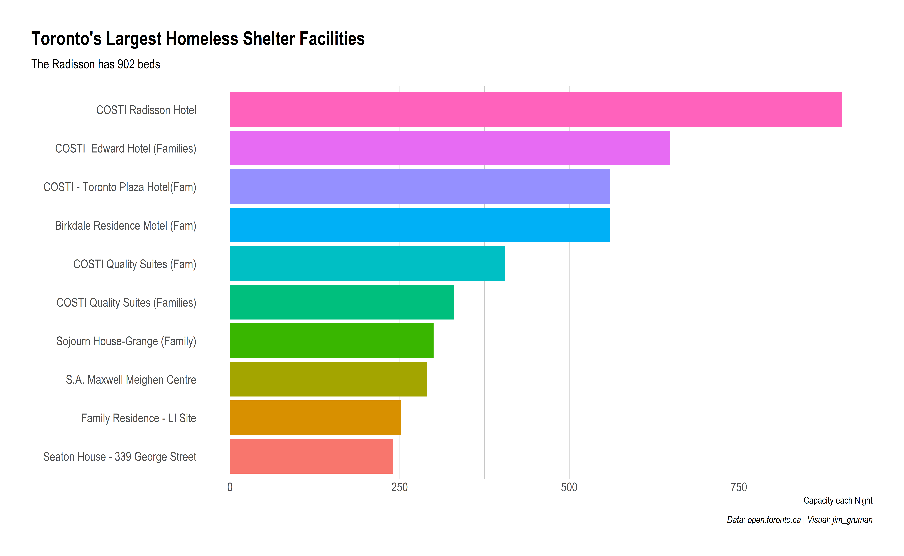
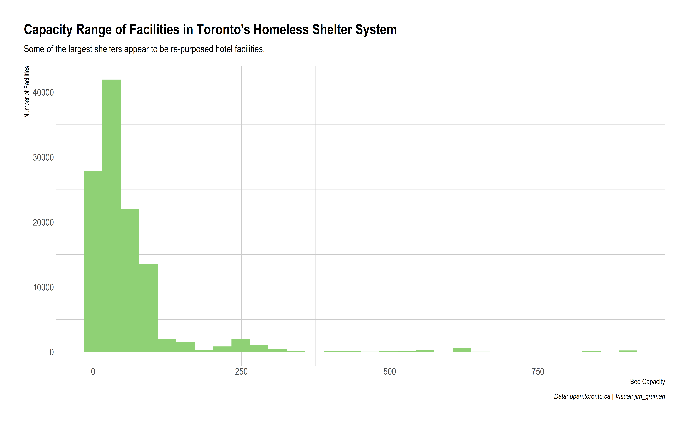
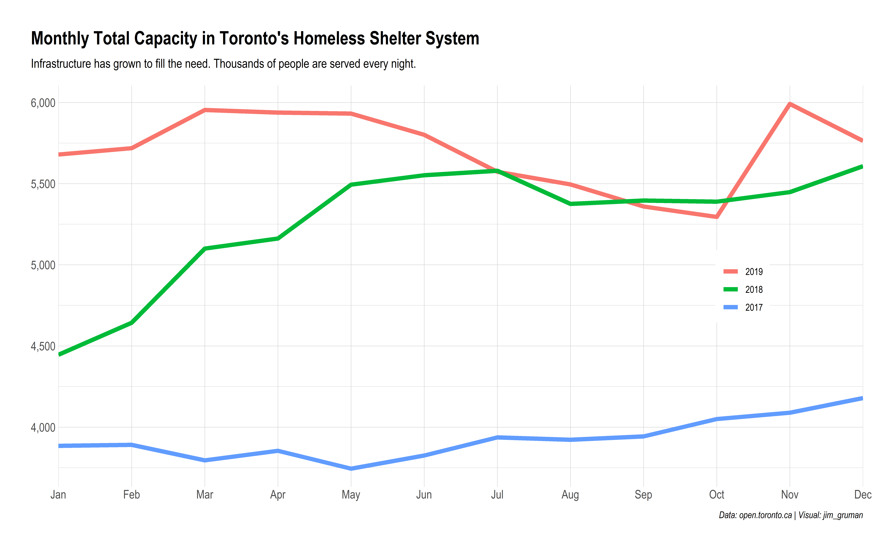
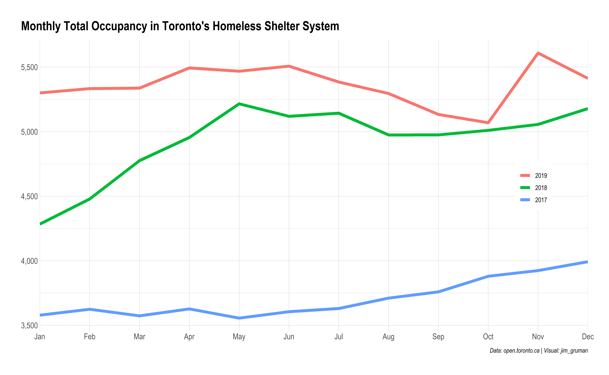
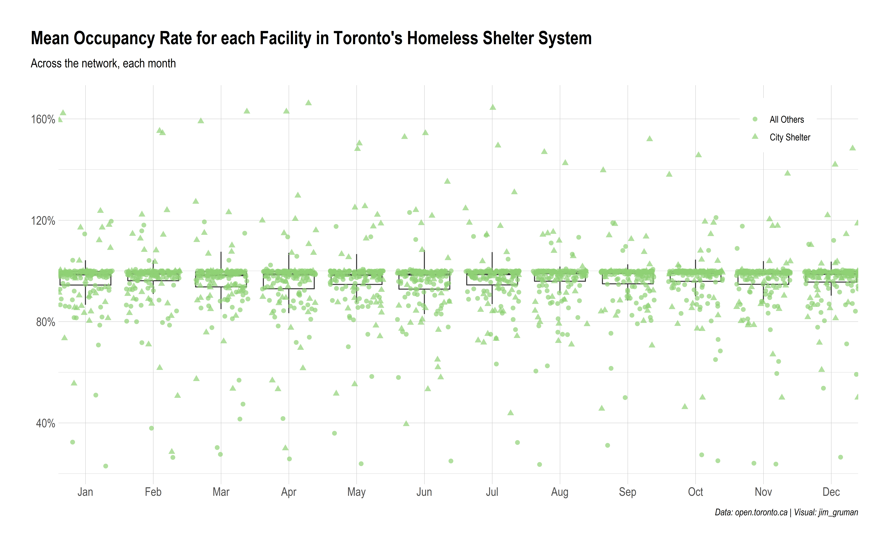
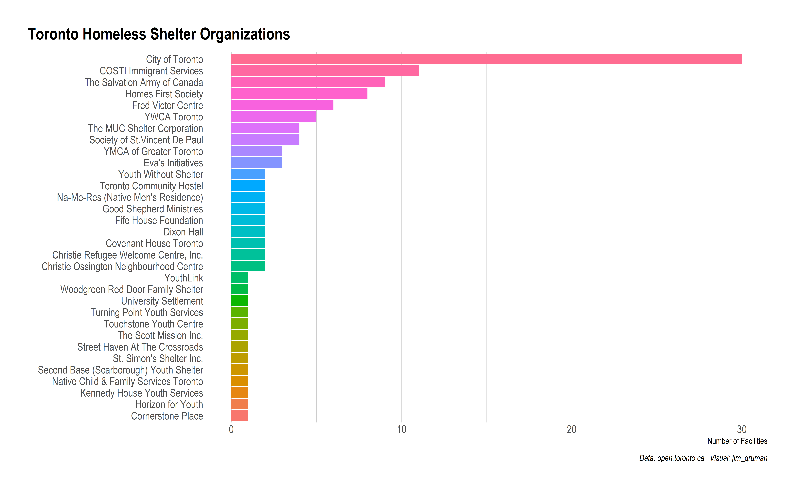
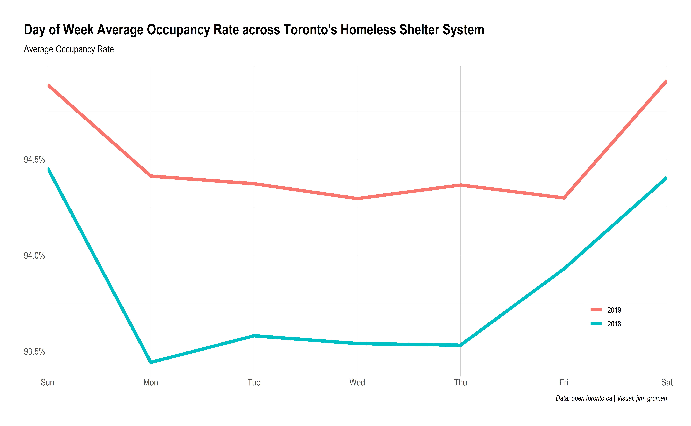
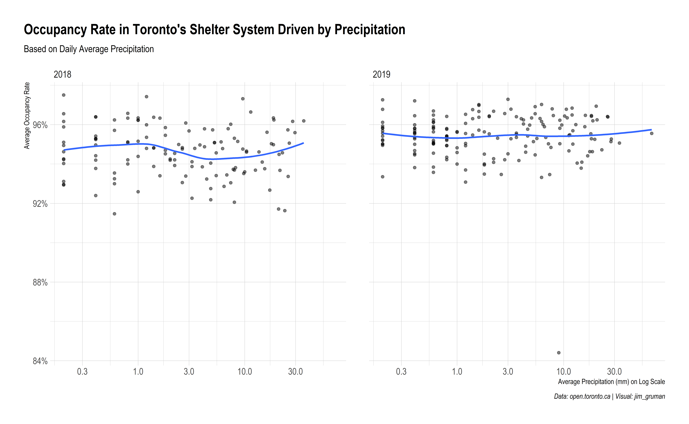
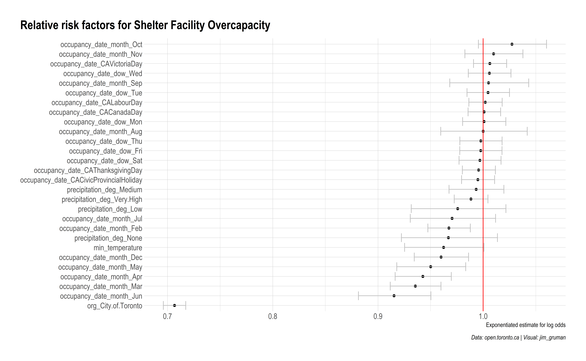

Toronto Homeless Shelters
Jim Gruman
December 1, 2020
Last updated: 2020-12-02
Checks: 7 0
Knit directory: myTidyTuesday/
This reproducible R Markdown analysis was created with workflowr (version 1.6.2). The Checks tab describes the reproducibility checks that were applied when the results were created. The Past versions tab lists the development history.
Great! Since the R Markdown file has been committed to the Git repository, you know the exact version of the code that produced these results.
Great job! The global environment was empty. Objects defined in the global environment can affect the analysis in your R Markdown file in unknown ways. For reproduciblity it’s best to always run the code in an empty environment.
The command set.seed(20200907) was run prior to running the code in the R Markdown file. Setting a seed ensures that any results that rely on randomness, e.g. subsampling or permutations, are reproducible.
Great job! Recording the operating system, R version, and package versions is critical for reproducibility.
Nice! There were no cached chunks for this analysis, so you can be confident that you successfully produced the results during this run.
Great job! Using relative paths to the files within your workflowr project makes it easier to run your code on other machines.
Great! You are using Git for version control. Tracking code development and connecting the code version to the results is critical for reproducibility.
The results in this page were generated with repository version 641b231. See the Past versions tab to see a history of the changes made to the R Markdown and HTML files.
Note that you need to be careful to ensure that all relevant files for the analysis have been committed to Git prior to generating the results (you can use wflow_publish or wflow_git_commit). workflowr only checks the R Markdown file, but you know if there are other scripts or data files that it depends on. Below is the status of the Git repository when the results were generated:
Ignored files:
Ignored: .Rhistory
Ignored: .Rproj.user/
Ignored: data/acs_poverty.rds
Ignored: data/hike_data.rds
Ignored: data/us_states.rds
Ignored: data/weatherstats_toronto_daily.csv
Untracked files:
Untracked: My TidyTuesday Plot.png
Untracked: content/
Untracked: data/geospatial/
Untracked: data/geospatial_cloud_masks/
Untracked: data/geospatial_previews/
Note that any generated files, e.g. HTML, png, CSS, etc., are not included in this status report because it is ok for generated content to have uncommitted changes.
These are the previous versions of the repository in which changes were made to the R Markdown (analysis/TorontoShelters.Rmd) and HTML (docs/TorontoShelters.html) files. If you’ve configured a remote Git repository (see ?wflow_git_remote), click on the hyperlinks in the table below to view the files as they were in that past version.
| File | Version | Author | Date | Message |
|---|---|---|---|---|
| Rmd | 641b231 | opus1993 | 2020-12-02 | wflow_publish(“analysis/TorontoShelters.Rmd”) |
The data this week comes from Sharla Gelfand’s opendatatoronto R package. Her website has additional details and all sorts of other great datasets.
We are going to explore many of the time series aspects of Homelessness in Toronto, overlay the daily weather, and finally attempt to model and infer what drives the occupancy rate.
knitr::opts_chunk$set(
echo = TRUE,
fig.height = 7.402,
fig.width = 12,
message = FALSE,
warning = FALSE,
cache = FALSE,
cache.lazy = FALSE,
df_print = "paged",
dpi = 300,
tidy = "styler"
)library(tidyverse)
library(lubridate)
library(hrbrthemes)
suppressMessages(extrafont::loadfonts())
library(tidymodels)
theme_set(theme_ipsum() +
theme(plot.title.position = "plot"))tt <- tidytuesdayR::tt_load("2020-12-01")
Downloading file 1 of 1: `shelters.csv`ttAn initial look at the format of the dataset provided:
tt %>%
map(glimpse)Rows: 115,916
Columns: 13
$ id <dbl> 1, 2, 3, 4, 5, 6, 7, 8, 9, 10, 11, 12, 13, 14, ...
$ occupancy_date <dttm> 2017-01-01, 2017-01-01, 2017-01-01, 2017-01-01...
$ organization_name <chr> "COSTI Immigrant Services", "Christie Ossington...
$ shelter_name <chr> "COSTI Reception Centre", "Christie Ossington M...
$ shelter_address <chr> "100 Lippincott Street", "973 Lansdowne Avenue"...
$ shelter_city <chr> "Toronto", "Toronto", "Toronto", "Toronto", "To...
$ shelter_province <chr> "ON", "ON", "ON", "ON", "ON", "ON", "ON", "ON",...
$ shelter_postal_code <chr> "M5S 2P1", "M6H 3Z5", "M6H 3Z5", "M6G 3B1", NA,...
$ facility_name <chr> "COSTI Reception Centre", "Christie Ossington M...
$ program_name <chr> "COSTI Reception Ctr CITY Program", "Christie O...
$ sector <chr> "Co-ed", "Men", "Men", "Families", "Men", "Fami...
$ occupancy <dbl> 16, 13, 63, 66, 58, 168, 119, 23, 8, 14, 0, 0, ...
$ capacity <dbl> 16, 17, 63, 70, 60, 160, 150, 28, 0, 40, NA, 0,...$shelters
# A tibble: 115,916 x 13
id occupancy_date organization_na~ shelter_name shelter_address
<dbl> <dttm> <chr> <chr> <chr>
1 1 2017-01-01 00:00:00 COSTI Immigrant~ COSTI Recep~ 100 Lippincott~
2 2 2017-01-01 00:00:00 Christie Ossing~ Christie Os~ 973 Lansdowne ~
3 3 2017-01-01 00:00:00 Christie Ossing~ Christie Os~ 973 Lansdowne ~
4 4 2017-01-01 00:00:00 Christie Refuge~ Christie Re~ 43 Christie St~
5 5 2017-01-01 00:00:00 City of Toronto Birchmount ~ 1673 Kingston ~
6 6 2017-01-01 00:00:00 City of Toronto Birkdale Re~ 1229 Ellesmere~
7 7 2017-01-01 00:00:00 City of Toronto Birkdale Re~ 1229 Ellesmere~
8 8 2017-01-01 00:00:00 City of Toronto Downsview D~ 1651 Sheppard ~
9 9 2017-01-01 00:00:00 City of Toronto Family Resi~ 4222 Kingston ~
10 10 2017-01-01 00:00:00 City of Toronto Family Resi~ 4222 Kingston ~
# ... with 115,906 more rows, and 8 more variables: shelter_city <chr>,
# shelter_province <chr>, shelter_postal_code <chr>, facility_name <chr>,
# program_name <chr>, sector <chr>, occupancy <dbl>, capacity <dbl>The dataset appears to be a daily report-out of every facility’s occupancy and capacity.
Let’s grab the weather too
Importing climate daily stats from “https://toronto.weatherstats.ca/download.html”
weather <- read_csv(here::here("data/weatherstats_toronto_daily.csv")) %>%
select(date, max_temperature, min_temperature, avg_temperature, precipitation)Some fields in the shelter data need be cast as integers and dates. We will also impute to fill-in missing capacity figures on the daily reports, where possible
shelters <- tt$shelters %>%
mutate(across(occupancy:capacity, as.integer),
occupancy_date = lubridate::as_date(occupancy_date)
) %>%
group_by(facility_name, shelter_name, organization_name) %>%
fill(capacity, .direction = "downup") %>%
ungroup()Some basic facts about Toronto’s homeless shelter network
The network consists of 33 organizations with 65 named shelters with 114 individual facility locations. Some sites host families, some men, and some women.
shelters %>%
filter(!is.na(capacity)) %>%
group_by(facility_name) %>%
summarize(
max_cap = max(capacity, na.rm = TRUE),
.groups = "drop"
) %>%
slice_max(order_by = max_cap, n = 10) %>%
mutate(facility_name = fct_reorder(facility_name, max_cap)) %>%
ggplot(aes(max_cap, facility_name)) +
geom_col(aes(fill = facility_name),
show.legend = FALSE
) +
labs(
title = "Toronto's Largest Homeless Shelter Facilities",
subtitle = "The Radisson has 902 beds",
x = "Capacity each Night", y = "",
caption = "Data: open.toronto.ca | Visual: jim_gruman"
) +
theme(panel.grid.major.y = element_blank())
Some of the largest shelters appear to be re-purposed hotel facilities.
For reference, let’s sum the maximum bed capacity at all facilities for a perspective of the total network capacity:
shelters %>%
filter(!is.na(capacity)) %>%
group_by(facility_name) %>%
summarize(
max_cap = max(capacity),
.groups = "drop"
) %>%
summarise(Total_Capacity = sum(max_cap, na.rm = TRUE))# A tibble: 1 x 1
Total_Capacity
<int>
1 9282There may have been some facility name changes, because the detail by month does not support this grand total.
Typical facilities are under 200 beds
shelters %>%
ggplot() +
geom_histogram(aes(capacity), fill = ipsum_pal()(2)[2]) +
labs(
title = "Capacity Range of Facilities in Toronto's Homeless Shelter System",
subtitle = "Some of the largest shelters appear to be re-purposed hotel facilities.",
y = "Number of Facilities",
x = "Bed Capacity",
caption = "Data: open.toronto.ca | Visual: jim_gruman"
)
Let’s look at capacity across the network, by month, over time:
shelters %>%
group_by(
month = month(occupancy_date,
abbr = TRUE,
label = TRUE
),
year = factor(year(occupancy_date),
levels = c("2019", "2018", "2017")
),
facility_name
) %>%
summarize(
avg_cap = mean(capacity, na.rm = TRUE),
.groups = "drop_last"
) %>%
summarize(tot_cap = sum(avg_cap, na.rm = TRUE)) %>%
ggplot(aes(month, tot_cap, color = year, group = year)) +
geom_line(size = 2) +
scale_y_continuous(label = scales::comma_format()) +
scale_x_discrete(expand = c(0, 0)) +
labs(
title = "Monthly Total Capacity in Toronto's Homeless Shelter System",
subtitle = "Infrastructure has grown to fill the need. Thousands of people are served every night.",
y = NULL, color = NULL,
x = NULL,
caption = "Data: open.toronto.ca | Visual: jim_gruman"
) +
theme(
legend.position = c(0.85, 0.5),
legend.background = element_rect(color = "white")
)
Let’s take a similar approach and sum up the facility occupancy
shelters %>%
group_by(
month = month(occupancy_date,
abbr = TRUE,
label = TRUE
),
year = factor(year(occupancy_date),
levels = c("2019", "2018", "2017")
), facility_name
) %>%
summarize(
tot_occupancy = mean(occupancy, na.rm = TRUE),
.groups = "drop_last"
) %>%
summarize(tot_occupancy = sum(tot_occupancy)) %>%
ggplot(aes(month, tot_occupancy, color = year, group = year)) +
geom_line(size = 2) +
scale_y_continuous(label = scales::comma_format()) +
scale_x_discrete(expand = c(0, 0)) +
labs(
title = "Monthly Total Occupancy in Toronto's Homeless Shelter System",
y = NULL,
x = NULL, color = NULL,
caption = "Data: open.toronto.ca | Visual: jim_gruman"
) +
theme(
legend.position = c(0.9, 0.5),
legend.background = element_rect(color = "white")
)
shelters %>%
group_by(
month = month(occupancy_date,
abbr = TRUE,
label = TRUE
),
year = factor(year(occupancy_date),
levels = c("2019", "2018", "2017")
),
facility_name
) %>%
summarize(
avg_occupancy = mean(occupancy, na.rm = TRUE),
avg_cap = mean(capacity, na.rm = TRUE),
.groups = "drop_last"
) %>%
summarize(mean_rate = sum(avg_occupancy, na.rm = TRUE) / sum(avg_cap, na.rm = TRUE)) %>%
filter(year != "2017") %>%
ggplot(aes(month, mean_rate, color = year, group = year)) +
geom_line(size = 2) +
scale_y_continuous(label = scales::percent_format(accuracy = 1)) +
scale_x_discrete(expand = c(0, 0)) +
labs(
title = "Mean Occupancy Rate in Toronto's Homeless Shelter System",
subtitle = "Across the network, for the sum of all facilities",
y = NULL,
x = NULL,
caption = "Data: open.toronto.ca | Visual: jim_gruman"
) +
theme(
legend.position = c(0.9, 0.1),
legend.background = element_rect(color = "white")
)
What is the distribution of rates across the network each month?
shelters %>%
group_by(
month = month(occupancy_date,
abbr = TRUE,
label = TRUE
),
year = factor(year(occupancy_date),
levels = c("2019", "2018", "2017")
),
facility_name
) %>%
summarize(
avg_occupancy = mean(occupancy, na.rm = TRUE),
avg_cap = mean(capacity, na.rm = TRUE),
.groups = "drop_last"
) %>%
filter(year != "2017", avg_occupancy > 0) %>%
mutate(mean_rate = avg_occupancy / avg_cap) %>%
ggplot(aes(month, mean_rate, group = month)) +
geom_boxplot() +
scale_y_continuous(labels = scales::percent_format(accuracy = 1)) +
scale_x_discrete(expand = c(0, 0)) +
annotate("text",
x = 7.8,
y = 1.63,
label = "Family Residence - Main Building"
) +
labs(
title = "Mean Occupancy Rate for each facility in Toronto's Homeless Shelter System",
subtitle = "Across the network, each month",
y = NULL,
x = NULL,
caption = "Data: open.toronto.ca | Visual: jim_gruman"
) +
theme(
legend.position = c(0.9, 0.1),
legend.background = element_rect(color = "white")
)
Some facilities are nearly always over capacity every month.
How many facilities are managed by each organization?
shelters %>%
select(organization_name, facility_name) %>%
distinct(facility_name, .keep_all = TRUE) %>%
count(organization_name, sort = TRUE) %>%
mutate(organization_name = fct_reorder(organization_name, n)) %>%
ggplot(aes(n, organization_name)) +
geom_col(aes(fill = organization_name),
show.legend = FALSE
) +
labs(
title = "Toronto Homeless Shelter Organizations",
x = "Number of Facilities", y = "",
caption = "Data: open.toronto.ca | Visual: jim_gruman"
) +
theme(panel.grid.major.y = element_blank())
Let’s join the data frames of the weather with the shelter occupancy data by date
shelterWeather <- shelters %>%
filter(!is.na(occupancy)) %>%
filter(capacity > 0) %>%
filter(occupancy_date >= min(weather$date)) %>%
mutate(rate = occupancy / capacity) %>%
select(
id, organization_name, shelter_name, facility_name,
occupancy_date,
occupancy,
capacity,
rate
) %>%
left_join(weather, by = c("occupancy_date" = "date")) %>%
mutate(
precipitation_deg = case_when(
precipitation == 0 ~ "None",
between(precipitation, 0.01, 10) ~ "Low",
between(precipitation, 10.01, 20) ~ "Medium",
between(precipitation, 20.01, 40) ~ "High",
TRUE ~ "Very High"
),
org = case_when(
organization_name == "City of Toronto" ~ "City of Toronto",
TRUE ~ "All Others"
)
)What patterns do we see by month?
shelters %>%
mutate(
month = month(occupancy_date, abbr = TRUE),
year = year(occupancy_date)
) %>%
group_by(year, month) %>%
summarise(
occupancy = sum(occupancy, na.rm = TRUE),
capacity = sum(capacity, na.rm = TRUE),
rate = occupancy / capacity,
.groups = "drop"
) %>%
filter(year %in% c(2018, 2019)) %>%
ggplot(aes(month, rate, color = factor(year,
levels = c("2019", "2018")
))) +
geom_line(size = 2) +
scale_y_continuous(labels = scales::percent_format(accuracy = .1)) +
labs(
title = "Monthly Average Occupancy Rate across Toronto's Homeless Shelter System", y = NULL, x = NULL,
subtitle = "Average Occupancy Rate",
caption = "Data: open.toronto.ca | Visual: jim_gruman", color = NULL
) +
scale_x_continuous(
breaks = 1:12,
labels = month.abb,
limits = c(1, 12),
minor_breaks = NULL,
expand = c(0, 0)
) +
theme(
legend.position = c(0.9, 0.9),
legend.background = element_rect(color = "white")
)
What about by day of the week ?
shelters %>%
mutate(
wday = wday(occupancy_date,
label = TRUE,
abbr = TRUE
),
year = year(occupancy_date)
) %>%
group_by(year, wday) %>%
summarise(
occupancy = sum(occupancy, na.rm = TRUE),
capacity = sum(capacity, na.rm = TRUE),
rate = occupancy / capacity,
.groups = "drop"
) %>%
filter(year %in% c(2018, 2019)) %>%
ggplot(aes(wday, rate,
color = factor(year,
levels = c("2019", "2018")
),
group = year
)) +
geom_line(size = 2) +
scale_x_discrete(expand = c(0, 0)) +
scale_y_continuous(labels = scales::percent_format(accuracy = .1)) +
labs(
title = "Day of Week Average Occupancy Rate across Toronto's Homeless Shelter System", y = NULL, x = NULL,
subtitle = "Average Occupancy Rate",
caption = "Data: open.toronto.ca | Visual: jim_gruman", color = NULL
) +
theme(
legend.position = c(0.9, 0.2),
legend.background = element_rect(color = "white")
)
What other patterns do we see each day? Start with the minimum temperature. Note that the weather file earliest data is March of 2018.
shelterWeather %>%
group_by(
day = day(occupancy_date),
month = month(occupancy_date),
year = year(occupancy_date)
) %>%
summarise(
avg_rate = mean(rate, na.rm = TRUE),
avg_temp = mean(min_temperature, na.rm = TRUE),
avg_precipitation = mean(precipitation, na.rm = TRUE),
.groups = "drop"
) %>%
filter(year %in% c(2018, 2019)) %>%
ggplot(aes(avg_temp, avg_rate)) +
geom_point(alpha = 0.5) +
scale_y_continuous(labels = scales::percent_format(accuracy = 1)) +
geom_smooth(se = FALSE) +
facet_wrap(~year) +
labs(
title = "Occupancy Rate in Toronto's Shelter System driven by Temperature",
subtitle = "Based on Average Daily Minimum Temperature(Celsius)",
y = "Average Occupancy Rate",
x = "Average Temperature (Celsius)",
caption = "Data: open.toronto.ca | Visual: jim_gruman"
)
shelterWeather %>%
filter(precipitation > 0) %>%
group_by(
day = day(occupancy_date),
month = month(occupancy_date),
year = year(occupancy_date)
) %>%
summarise(
avg_rate = mean(rate, na.rm = TRUE),
avg_temp = mean(min_temperature, na.rm = TRUE),
avg_precipitation = mean(precipitation, na.rm = TRUE),
.groups = "drop"
) %>%
filter(year %in% c(2018, 2019)) %>%
ggplot(aes(avg_precipitation, avg_rate)) +
geom_point(alpha = 0.5) +
scale_y_continuous(labels = scales::percent_format(accuracy = 1)) +
scale_x_log10() +
geom_smooth(se = FALSE) +
facet_wrap(~year) +
labs(
title = "Occupancy Rate in Toronto's Shelter System Driven by Precipitation",
subtitle = "Based on Daily Average Precipitation",
y = "Average Occupancy Rate",
x = "Average Precipitation (mm) on Log Scale",
caption = "Data: open.toronto.ca | Visual: jim_gruman"
)
Lets build a model of Over-Capacity events at each facility with features for the weekday, month, temperature, precipitation, and the two level org identifying the city shelters to make some inferences about what might be drivers of overcrowding.
Setting the breakpoint for over capacity at 0.999 yields a set that is largely balanced between response classes.
shelter_df <- shelterWeather %>%
mutate(over_cap = factor(if_else(rate > 0.9999, "Yes", "No"))) %>%
select(
over_cap, occupancy_date,
min_temperature,
precipitation_deg,
org
)
table(shelter_df$over_cap)
No Yes
29745 40543 shelter_rec <-
recipe(over_cap ~ ., data = shelter_df) %>%
step_date(occupancy_date,
features = c("dow", "month")
) %>%
step_holiday(occupancy_date,
holidays = timeDate::listHolidays("CA")
) %>%
step_rm(occupancy_date) %>%
step_dummy(all_nominal(), -all_outcomes()) %>%
step_center(all_predictors()) %>%
step_scale(all_predictors()) %>%
step_zv(all_predictors())
glm_mod <- logistic_reg() %>%
set_engine("glm") %>%
set_mode("classification")
shelter_wflow <- workflow() %>%
add_model(glm_mod) %>%
add_recipe(shelter_rec)Let’s fit the linear model
shelter_glmfit <-
shelter_wflow %>%
fit(data = shelter_df)This shelter_glmfit object has the finalized recipe and fitted model objects inside. Let’s extract the model objects from the workflow.
For over capacity events, what features can we infer may be significant?
shelter_glmfit %>%
pull_workflow_fit() %>%
tidy() %>%
knitr::kable() %>%
kableExtra::kable_minimal()| term | estimate | std.error | statistic | p.value |
|---|---|---|---|---|
| (Intercept) | 0.3162757 | 0.0077810 | 40.6473025 | 0.0000000 |
| min_temperature | -0.0383697 | 0.0200151 | -1.9170345 | 0.0552335 |
| occupancy_date_CACanadaDay | 0.0009394 | 0.0078851 | 0.1191329 | 0.9051700 |
| occupancy_date_CACivicProvincialHoliday | -0.0050601 | 0.0080333 | -0.6298919 | 0.5287653 |
| occupancy_date_CALabourDay | 0.0020129 | 0.0080474 | 0.2501263 | 0.8024897 |
| occupancy_date_CAThanksgivingDay | -0.0043454 | 0.0080321 | -0.5410052 | 0.5885040 |
| occupancy_date_CAVictoriaDay | 0.0063301 | 0.0079835 | 0.7928945 | 0.4278393 |
| precipitation_deg_Low | -0.0245674 | 0.0235152 | -1.0447455 | 0.2961406 |
| precipitation_deg_Medium | -0.0067309 | 0.0133819 | -0.5029867 | 0.6149736 |
| precipitation_deg_None | -0.0335973 | 0.0240709 | -1.3957675 | 0.1627845 |
| precipitation_deg_Very.High | -0.0117018 | 0.0082441 | -1.4194174 | 0.1557774 |
| org_City.of.Toronto | -0.3472797 | 0.0076931 | -45.1419718 | 0.0000000 |
| occupancy_date_dow_Mon | 0.0008064 | 0.0104780 | 0.0769588 | 0.9386564 |
| occupancy_date_dow_Tue | 0.0046077 | 0.0102513 | 0.4494778 | 0.6530870 |
| occupancy_date_dow_Wed | 0.0059505 | 0.0102687 | 0.5794855 | 0.5622617 |
| occupancy_date_dow_Thu | -0.0022919 | 0.0102613 | -0.2233563 | 0.8232582 |
| occupancy_date_dow_Fri | -0.0023512 | 0.0102517 | -0.2293496 | 0.8185972 |
| occupancy_date_dow_Sat | -0.0031387 | 0.0102185 | -0.3071588 | 0.7587225 |
| occupancy_date_month_Feb | -0.0331305 | 0.0106431 | -3.1128652 | 0.0018528 |
| occupancy_date_month_Mar | -0.0666729 | 0.0131334 | -5.0765709 | 0.0000004 |
| occupancy_date_month_Apr | -0.0590202 | 0.0144425 | -4.0865635 | 0.0000438 |
| occupancy_date_month_May | -0.0511820 | 0.0175879 | -2.9100596 | 0.0036136 |
| occupancy_date_month_Jun | -0.0885333 | 0.0191927 | -4.6128596 | 0.0000040 |
| occupancy_date_month_Jul | -0.0299916 | 0.0212907 | -1.4086700 | 0.1589328 |
| occupancy_date_month_Aug | -0.0000367 | 0.0209568 | -0.0017511 | 0.9986028 |
| occupancy_date_month_Sep | 0.0050632 | 0.0190458 | 0.2658425 | 0.7903605 |
| occupancy_date_month_Oct | 0.0269961 | 0.0160805 | 1.6788111 | 0.0931889 |
| occupancy_date_month_Nov | 0.0098310 | 0.0139225 | 0.7061196 | 0.4801137 |
| occupancy_date_month_Dec | -0.0408257 | 0.0137153 | -2.9766406 | 0.0029143 |
The same data, in a visual:
shelter_glmfit %>%
tidy(conf.int = TRUE, exponentiate = TRUE) %>%
filter(term != "(Intercept)") %>%
mutate(term = fct_reorder(term, estimate)) %>%
ggplot(aes(estimate, term)) +
geom_point() +
geom_errorbarh(aes(xmin = conf.low, xmax = conf.high), color = "gray") +
geom_vline(xintercept = 1, color = "red") +
labs(
title = "Relative risk factors for Shelter Facility Overcapacity",
caption = "Data: open.toronto.ca | Visual: jim_gruman",
x = "Exponentiated estimate for log odds", y = NULL
)
There is some evidence in this dataset that the months of December, (January), February, March, April, May, and June drive over occupancy over capacity. Also, the City of Toronto facilities themselves are over capacity.
sessionInfo()R version 4.0.3 (2020-10-10)
Platform: x86_64-w64-mingw32/x64 (64-bit)
Running under: Windows 10 x64 (build 19041)
Matrix products: default
locale:
[1] LC_COLLATE=English_United States.1252
[2] LC_CTYPE=English_United States.1252
[3] LC_MONETARY=English_United States.1252
[4] LC_NUMERIC=C
[5] LC_TIME=English_United States.1252
attached base packages:
[1] stats graphics grDevices utils datasets methods base
other attached packages:
[1] yardstick_0.0.7 workflows_0.2.1 tune_0.1.2 rsample_0.0.8
[5] recipes_0.1.15 parsnip_0.1.4 modeldata_0.1.0 infer_0.5.3
[9] dials_0.0.9 scales_1.1.1 broom_0.7.2 tidymodels_0.1.2
[13] hrbrthemes_0.8.6 lubridate_1.7.9.2 forcats_0.5.0 stringr_1.4.0
[17] dplyr_1.0.2 purrr_0.3.4 readr_1.4.0 tidyr_1.1.2
[21] tibble_3.0.4 ggplot2_3.3.2 tidyverse_1.3.0 workflowr_1.6.2
loaded via a namespace (and not attached):
[1] colorspace_2.0-0 selectr_0.4-2 ellipsis_0.3.1
[4] class_7.3-17 rprojroot_2.0.2 fs_1.5.0
[7] rstudioapi_0.13 farver_2.0.3 listenv_0.8.0
[10] furrr_0.2.1 prodlim_2019.11.13 fansi_0.4.1
[13] xml2_1.3.2 codetools_0.2-16 splines_4.0.3
[16] R.methodsS3_1.8.1 extrafont_0.17 memuse_4.1-0
[19] knitr_1.30 jsonlite_1.7.1 pROC_1.16.2
[22] Rttf2pt1_1.3.8 dbplyr_2.0.0 R.oo_1.24.0
[25] compiler_4.0.3 httr_1.4.2 backports_1.2.0
[28] assertthat_0.2.1 Matrix_1.2-18 cli_2.2.0
[31] later_1.1.0.1 htmltools_0.5.0 tools_4.0.3
[34] gtable_0.3.0 glue_1.4.2 Rcpp_1.0.5
[37] cellranger_1.1.0 styler_1.3.2 DiceDesign_1.8-1
[40] vctrs_0.3.5 nlme_3.1-150 extrafontdb_1.0
[43] iterators_1.0.13 timeDate_3043.102 gower_0.2.2
[46] xfun_0.19 globals_0.14.0 ps_1.4.0
[49] rvest_0.3.6 lifecycle_0.2.0 future_1.20.1
[52] MASS_7.3-53 ipred_0.9-9 hms_0.5.3
[55] promises_1.1.1 parallel_4.0.3 curl_4.3
[58] yaml_2.2.1 gdtools_0.2.2 rpart_4.1-15
[61] stringi_1.5.3 highr_0.8 foreach_1.5.1
[64] lhs_1.1.1 hardhat_0.1.5 lava_1.6.8.1
[67] rlang_0.4.9 pkgconfig_2.0.3 systemfonts_0.3.2
[70] evaluate_0.14 lattice_0.20-41 labeling_0.4.2
[73] tidyselect_1.1.0 here_1.0.0 parallelly_1.21.0
[76] tidytuesdayR_1.0.1 plyr_1.8.6 magrittr_2.0.1
[79] R6_2.5.0 generics_0.1.0 DBI_1.1.0
[82] mgcv_1.8-33 pillar_1.4.7 haven_2.3.1
[85] whisker_0.4 withr_2.3.0 survival_3.2-7
[88] nnet_7.3-14 modelr_0.1.8 crayon_1.3.4
[91] utf8_1.1.4 rmarkdown_2.5 usethis_1.6.3
[94] grid_4.0.3 readxl_1.3.1 git2r_0.27.1
[97] webshot_0.5.2 reprex_0.3.0 digest_0.6.27
[100] R.cache_0.14.0 httpuv_1.5.4 R.utils_2.10.1
[103] munsell_0.5.0 GPfit_1.0-8 viridisLite_0.3.0
[106] kableExtra_1.3.1